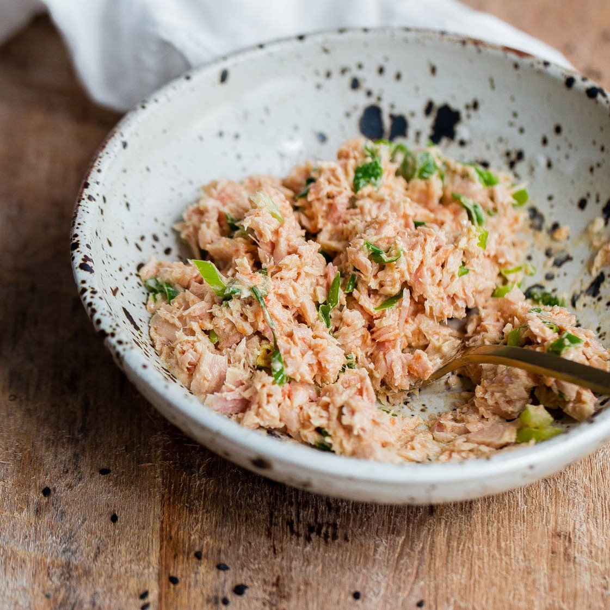

Home
Spicy Tuna Recipe

For when your tuna just isn't fiery enough. Now with canned tuna!
Ingredients:
¾ can tuna
2 tbsp mayonaise
1 tbsp mustard
½ tbsp red pepper
½ tbsp honey
½ tbsp canola oil
Steps:
In a bowl, mix all ingredients together.
Enjoy in sushi, or on rice.